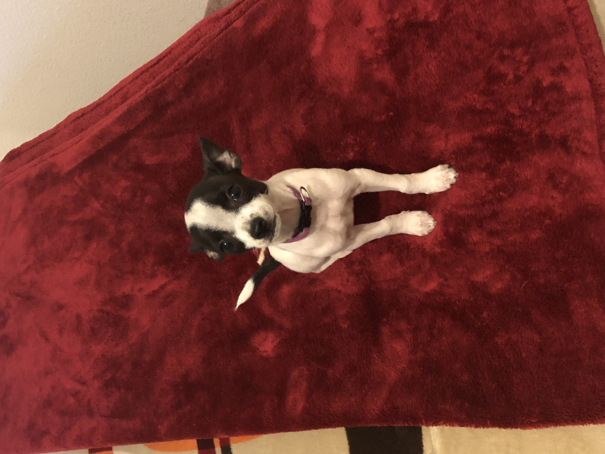

About Me

Hello, my name is Adrian Perez Gonzalez to tell you a little about
myself I have a dog on the left you can see a picture of my dog,
her name is "Luna" or as I like to call her "Tiny Dog". I am
currently a Senior at Portland State University and am studying
Computer Science. I have always been interested in how computers
work for as long as I can remember which is why I decided to study
Computer Science. The main topic that interests me in Computer
Science is Cyber Security; this is the most interesting part of
Computer Science to me because it is always changing as new
exploits get identified and patched. I am still relatively new to
the industry of Cyber Security but have gotten one internship were
I have learned a lot of the basic of Cyber Security. I am
currently interring at Lines for Life as an Information Security
Officer Intern. Where I have learned a lot about how to do proper
change management, performing vender risk assessments, and about
NIST security practices. I also have experience working as IT
helpdesk at Portland State University helping end users diagnose
and solve their technology issues.